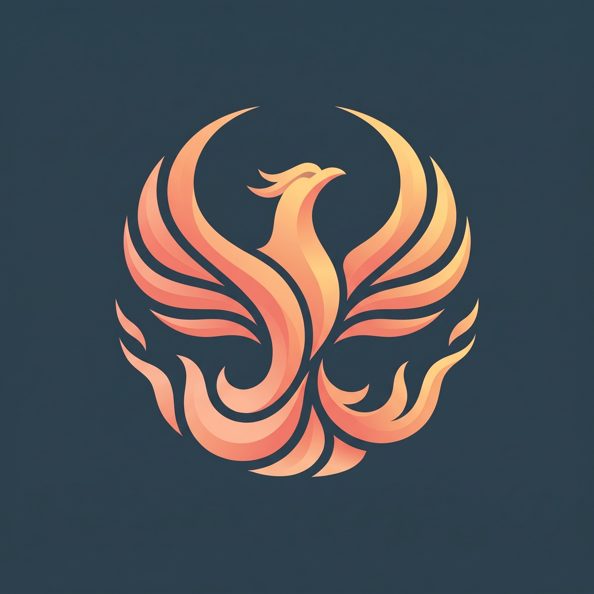
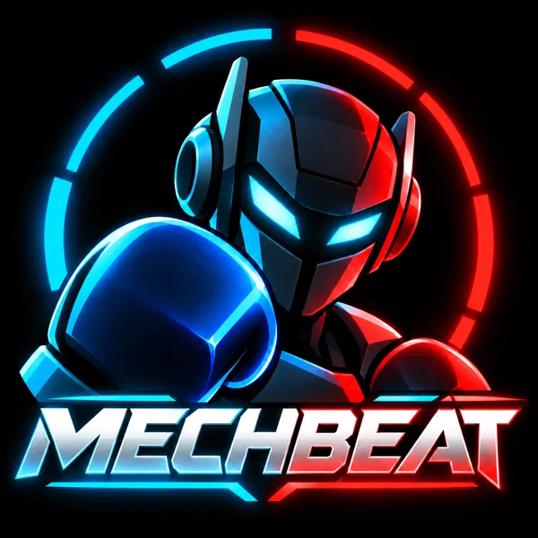

Be there.
We build for the feeling of stepping into a world, not just looking at one.

SECONDFIREGAMESINDEPENDENT GAME STUDIO / EST. 2026
We're building worlds
you can step inside.
01 / IN DEVELOPMENT
ACTIVE PROJECTFIRST EXPERIENCE

Step into a VR rhythm boxing arena. Punch and dodge to the beat as your moves drive the robot fight at the center of the ring. In development for Meta Quest.
MECHBEAT / IN DEVELOPMENT
02 / WHAT DRIVES US
THOUGHT INTO EXPERIENCEWe build for the feeling of stepping into a world, not just looking at one.
Every interaction should give players a reason to move, react and explore.
New technology matters when it lets us create something meaningful.
03 / THE STUDIO
SecondFireGames is an independent game studio founded in 2026. We're at the beginning, building our first virtual reality project and shaping how we want to make games.
BASED IN TÜRKİYE
04 / PEOPLE
TWO FOUNDERS. ONE STUDIO.05 / STAY CONNECTED
Our first project is still taking shape. Follow the studio as we build it.